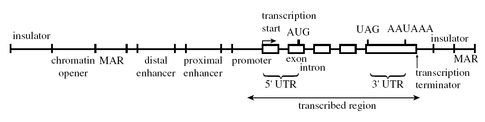

Biology
Biology of
Eschericia coli
and Prokaryotes
This is only scattered notes, and not intended to be a detailed review on
the biology of
E. coli
.
E. coli is used because it has a very short cell (division) cycle and can
proliferate from thousands to billions in the matter of a day and night
(24 h). In logarithmic growth phase, its division cycle period is on the
order or 20 min to 1 h, depending upon growth medium and other factors. A
minimal (defined) medium of glucose or glycerol as a carbon source, of
ammonium salt (sodium ammonium phosphate) or histidine for a nitrogen
source, and of salts including the ions sodium, potassium, magnesium,
calcium, sulfate, chloride, and phosphate are used; some trace elements
are also required. Alternatively a rich medium of partially hydrolyzed
animal or plant protein, yeast extract (this provides vitamins, enzyme
cofactors, etc.) as well as a carbon and nitrogen source with salts is
used.
When cells grow into the billions, these are essentially clones (their
genomes are identical) with the single cell from which they expanded.
However, with replication of any genome, there is a detectable mutation in
every 1 in 10
6
to 10
8
replications of a gene. With about 3000 genes in
E. coli
, that means that by the time a cell has divided to a few thousand, some
genes will differ. Therefore some means of selection are required to
remove the cells whose genes of interest has mutated.
Genome
Plasmids
Plasmids are extrachromosomal DNA occuring in a circular, superhelical
double-stranded form ranging from 1 kb to 200 kb.
A plasmid is a
replicon
if it contains an origin of replication and associated control elements,
usually several hundred bases long. Today's plasmids originate from a
single replicon, pMB1, although 30 or more have been identified (pMB1 is a
close relative to the colicin E1 [colE1] replicon). This keeps about 15-20
copies per cell. Specialized vectors exist to generate high or low copy
numbers, depending upon the application.
Gene Transfer
Genetic material can be transferred into individual bacterium of E. coli
and other species
horizontally
by three ways rather than merely
vertically
(by DNA replication and cell division to daughter cells).
Conjugation
Some
E. coli
carry an
F
plasmid that integrates into the chromosome, making the bacterium an
Hfr
male
strain. Another bacterium necessarily lacking the integrated
F
plasmid (
female
) becomes
conjugated
with the male bacterium through a
pilus
(about 1-2 percent of cell length). During gene transfer, a single strand
in the male is nicked and this strand (5' or 3' end??) moves through the
pilus into the female. It carries with it genes that trail the Hfr gene.
The single strands in the male donor and female recipient are replicated.
Transfer of the genes can be interrupted at random, with only some of the
male genes transferred. In the female a recombination/replication cycle
allows formation of two chromosomes, one containing the original female
set, and the other incorporating the other the female set with recombined
male genes. The bacterium is a
merodiploid
until cell division segregates the genes. A new third bacterium is now
present in the soup, and can be selected.
Transduction
When bacteriophages infect bacteria, they can contain in their genome some
genes taken from the previous host in which they grew. This gene transfer
is known as
transduction
.
Specialized
or
restricted
transducing phages consistently incorporate a particular set of genes.
These are because these phages may incorporate into particular sites of
the host genome during
lysogeny
and then when a lytic event occurs, they take part of the host genome from
that integrated site.
Generalized
transducing phages are not consistent in the host genes they transfer,
probably because their biology allows them to incorporate any part of the
host DNA.
Defective
transducing phages are phages incapable of producing lysis to kill their
hosts during their replicative cycle, but they can still transfer genetic
material.
Transformation
Bacteria can incorporate naked DNA from outside the cell into their cell
membranes and even integrate it into the host genome.
Prokaryotic Transcription
This section describes the mechanism of transcription the RNA polymerases
involved. Translation is coupled to (occurs immediately after)
transcription in prokaryotes. There is no nucleus that segregates the
translation machinery from the transcriptional machinery.
RNA Polymerase
The
RNA polymerase of
E coli
is one of the first and most extensively studied. It is composed of four
different proteins (α, β, β′, and ω) which assemble into five subunits
total (one protein makes up two subunits). Its holoenzyme assembly is α
2
ββ′ω (M
r
390,000) and this transcribes all coding DNA It is a DNA-dependent
polymerase, which requires a DNA template and four ribonucleotides ATP,
GTP, CTP, and UTP. It also requires external Mg
2+
as a salt. The enzyme containa a Zn
2+
atom.
The ds DNA template will run through a cleft formed by the interface of
the large β and β′ subunits, where the esterification active site is for
polymer extension.
The two α subunits will interact probably with typically homodimeric
DNA-binding proteins that act as transcriptional activators or enhancers
or in positioning the polymerase.
σ factors
. The polymerase will also associate with other proteins which are σ
factors and these direct which class of DNA genes the RNA polymerase binds
to in the bacterium: normal transcription, heat- and cold-shock-based
transcription. σ
70
(because its relative mass). The σ
32
(
M
r
32,000) is specific for heat shock.
Errors in transcription
. About 1 for every 10,000 to 100,000 nts, higher than for replication,
but since RNA is not the permanent source of the genome, it is acceptable.
Mismatched pairing will cause polymerase pausing with a brief direction
reversal to remove the mismatch.
Promoters
Directs the polymerase assembly to its start site. The promoter region
begins usually 70 bp upstream and 30 bp downstream relative to
transcription start because the polymerase binds these regions.
Consensus sequences have been identified:
-
Pribnow box
: 6 base-long sequence located between −12 and −7 (centered at −10). The
consensus sequences is
5′-TATAAT-3′
. The last base is always T, and others are >60% the bases given.
-
−35 region
. This also contains a 6 bp region with a sequence that varies with a
consensus of 5′-TTGACA-3′. Positions 2 and 5 are probably highly
conserved as T and C, respectively. Positions 3, 4, and 6 are quite
conserved, while position 1 might be G or C also.
-
UP element
. This has been identified and is present for some genes. It is
separated by one base from the −35 region, and so it ends at position
−37. It is 22 bp long with a consensus sequence identified as
5′-NNAAA[A|T][A|T]T[A|T]TTTTNNAAAANNN3′. The sequence
5′AGAAAATTATTTTAAATTTCCT-3′ is present in the P1 promoter for the rRNA
gene
rrnB
.
Polymorphisms (natural variations) in the consensus sequences have effects
on polymerase binding and on the initiation of transcription, which may be
an intended effect of regulation of gene expression.
Transcription Details
Binding
. Footprinting studies (DNase cuts with polymerase bound) show that the
assembly envelopes ~35 bp. Unwinding of the
closed complex
to form the
open complex
occurs, with a 12-15 bp region of DNA from within the Pribnow (−10) box un
to position +2 or +3.
Initiation
. A purine (A or G) is usually the first base. It enters the enzyme at the
triphosphate and the 5′ end retains the triphosphate during transcription
(5′-pppN). With
promoter clearance
(i.e., the polymerase now directionally moved to expose the promoeter),
which is about 8-9 nt transcribed, the σ subunit is released and
elongation begins.
Elongation
. The polymerase needs to unwind and wind the DNA, forming a transcription
bubble
which is where the double-strandedness of the DNA is lost by opening it
for transcription. About 17 bp are lose base pairing within the
polymerase.
As NTPs enter, they are correctly paired with the sense DNA strand. The
3′-OH of the nascent RNA molecule is activated to esterify with the α-P of
the rNTPs, leading to pyrophosphorlysis (loss of PP
i
). The pyrophosphate will be hydrolyzed to drive the reaction
energetically as well.
During elongation, about 8 bp of the DNA-RNA hybrid exists in the
polymerase. The RNA emerges with loss of base-pairing, and the ss RNA is
free for immediate translation. The ds DNA strand binds to the surfaces of
the β and β′, where a cleft formed by the subunits is active site for
esterification of the rNTP to the growing RNA polymer. There is a Mg
2+
cation at the active site.
The elongation proceeds at a rate of 50-90 nt per second.
Coiling
. Ahead of the transcriptional complex, the polymerase drives the positive
supercoiling of DNA by strand separation, and negative supercoiling behind
it (observed both in vivo and in vitro). Topoisomerases are required to
deal with this.
Strand nomenclature
. Note that the strand used as template for transcription is the
complementary strand to what is called the
coding
strand (which is also the non-template strand).
Regulation of Transcription
RNA polymerases can be
enhanced
or
activated
to promote high levels of gene expression. They can also be
inhibited
or
repressed
to stop or reduce the levels of expression.
cAMP Receptor Protein (CRP)
The
cAMP receptor protein
(CRP)
, also called
catabolite activator protein (CAP)
, was one of the first proteins discovered as a protein that alters the
rate of transcription of some genes in bacteria. It was the first to have
its tertiary and primary structure determined and fully characterized, and
so it figures promimentally in the fundamentals of understanding
regulation of prokaryotic transcription.
The holoprotein is a homodimer, where the subunit is a 23.6 kDa 210 aa
(209 aa with N-Met cleaved) polypeptide is coded by the
crp
in
E coli
and features a 124 aa cAMP-binding domain and the interface for homodimers
(pos 10-133). A 73 aa ds DNA-binding domain (pos 138-210) contains a 20 aa
helix-turn-helix motif (pos 170-189) that is the canonical site for DNA
groove binding, binding the sequence 22 bp 5′-AAATGTGATCTAGATCACATTT-3′.
This sequence is palindromic, with first 11 bases mirroring the latter 11
bases.
Several studies, including 3D structure, show that one half (11 bp) bind
to one monomer and the other 11 bp bind the other monomer. A crystal
structure of the homodimer with bound cAMP (one each monomer) to the ds
sequence 5′-AAATGTGATCTAGATCACATTT-3′ reveals three important amino acids
on each monomer that bind to specific bases. For the purpose of understand
what protein interacts with the DNA position, the nomenclature for the
double-strand is Bnn for
B
ase at position
nn
, and *Bnn when the base at position
nn
is on the complementary strand. The numbering of the DNA is only by the
top 5′→3′ strand, so is it not the other way. The protein interaction will
be Mx-Bnn or Mx-*Bnn where x is 1 or 2 for monomer 1 (M1) or 2 (M2). Thus
M2-A15 would be monomer 2 interacting with base A at position 14 on the
top (non-complementary) strand. The interactions found for CRP and its
consensus are thus:
-
M1-G5 and M2-*G18, which are symmetrical interactions. The R180 amino
acid side chain is involved in this interaction, forming H-bonds with
guanine O-6 and N-7.
-
M1-G7 and M1-*T8, mediated by the single amino acid R185 on M1. The
cognate reaction is M2-T15 and M2-*G16, mediated by R185 on M2. R185
guanidinium interacts by H bone with thymine O-4 and with guanine O-6
and N-7
-
M1-*C7 mediated by E181 on M1, and M2-C16, mediated by E181 on M2. The
-COO of Glu forms an H bond with cytosine N-4.
Additionally there is strong contact with phosphate groups 3&priime;
to bases A12, G13, *A9, and *G10. The strongest preferences for binding
are positions 1-2 and 4-8 for M1, and 15-19 and 21-22 for M2. Binding of
CRP causes two types of strong bending (kinks) in the DNA between position
1 and 2, position 6 and 7 by M1, and between position 16 and 17 and
position 21 and 22 by M2. The inner kinks are primary and the outer are
secondary.
Binding of CRP to its DNA starts with a sequence-dependent formation of
hydrogen bonds and van der Waal interactions (
direct readout
). It then proceeds to interact with phosphates based on position and
solvation, and causing deformation (
indirect readout
). A bending of 80° is achieved. Each half has a
primary kink
of about 40° to compress major groove between position 6 and 7, then a
secondary kink
of about 9° compressing the minor group between positions 1 and 2. The
T:A/G:C dinucleotide base pair is associated with high roll angles and
susceptibility to roll deformation. Mutation studies such as E181D
(shortens side chain by a -CH
2
-) show that bending still occurs, but the angle is a smooth bend.
Nanosecond time-resolved fluorescence resonance energy transfer solution
studies show formation of a DNA bend with mean angle of 77° (consistent
with crystal data). Millisecond time-resolved luminescence shows the upper
limit of the bend is 100°. Besides bending by the protein, the sequences
itself shows inherent slight bending, up to 40-50°. Another factor might
be numerous electrostatic interactions of the CRP (K22, K26, K44, K166,
H199, and K201) with phosphates from positions 2 to 5. Mutation studies
(K22, K26, K44, K166) shows loss of bend angle of 5° per residue per
half-complex.
CRP upregulates transcription in about 100 genes of
E coli
typically involved in energy metabolism (galactose, citrate, PEP group
translocation); these are when energy sources other than glucose might be
present. It however downregulates its own synthesis and for adenylate
cyclase (
cyaA
) which generates cAMP from ATP.
There are several classes of activation elements (CRP-dependent promoters)
on the DNA sequence for genes using CRP for activation.
Class I elements are upstream the core promoter, and include the
lac
operon and the CC(−61.5). (CRP centers at position −61.5 in the case of
CC.) The α subunit C-terminal domain (αCTD) which is 85 aa long and
flexibly tethered to the RNA polymerase complex, binds via the
287 determinant
to the
activating region 1
of the downstream subunit of CRP. Note that αCTD is placed in interaction
with σ
70
too as well as with the minor groove of DNA (via 265 determinant) next to
CAP. The AR1-αCTD interaction as shown by crystal structures of CRP, DNA
consensus, and αCTD (not whole RNAP) is an interaction of only 6 residues
on both proteins with no conformational change in the binding: thus
transcriptional activation is simple recruitment.
Class II elements have CRP binding overlapping the −35 region and examples
include the
galP1
and CC(−41.5) artificial promoters. Three sets of interactions occur
compared to just one with the αCTD. There is an
activating region 2
(AR2) in the downstream subunit interacting with residues 162-165 in α
subunit N-terminal domain (αNTD) of the RNA polymerase.
Activating region 3
(AR3) of downstream CRP subunit interacts with residues 593-603 of σ
70
(called region 4 or σR4), which is involved in −35 region. These AR2 and
AR3 interactions activate via a post-recruitment mechanism, facilitating
isomerization of the polymerase closed complex to form the open complex.
The other αCTD of RNAP will interact with DNA minor groove: each αCTD can
alternately interact with CRP or the DNA minor groove.
There are also class III elements in which CRP works together with other
co-activator proteins.
Operons and Repressors
Bacterial transcription also features
operons
, where several related genes are produced on a single transcript (
polycistronic
mRNA) and then then translated.
Repression
involves transcriptional regulation scheme whereby a protein (
repressor
) binds to a region of DNA called the
operator
) and the binding prevents RNA polymerase binding (and therefore
transcription). An
effector
binds to a DNA-binding protein to either enhance or enable its binding or
to reduce its binding. An
inducer
is an effector that binds to a repressor to reduce its ability to bind the
operator; it effectively induces transcription. The
lac
operon is the best example of an inducible system (lactose binds to the
repressor to cause it to release from its operator). A
co-repressor
is an effector that is required to bind to a repressor to enable the
latter to bind to its operator region, and inhibit transcription. The
trp
operon is an example of a co-repressing regulation (in this case, the
amino acid itself, tryptophan, binds to the repressor to effect
repression).
The
lac
operon
The presence of lactose in medium growing
E. coli
allows for lactose to bind the inducible repressor of the operon. The
operon consists of the
lacZ
gene coding for β-galactosidase, the
lacY
coding for a permease that binds to the inner side of the membrane to
increase lactose uptake, and the
lacA
gene coding for a thiogalactoside transacetylase (GAT) which contains rare
codons and probably is derived from a plasmid, transposon, or phage gene;
this gene codes for a protein acetylates nonmetabolizable pyranosides to
prevent cell re-entry and helps in detoxification. The
lacI
gene codes for the 360 aa repressor and is not part of the operon.
Mutations in either the 25-30 bp operator DNA (
o
c
) sequence to which the lacI repressor binds or to the
lacI
gene causes constitutive transcription of the
lac
operon.
The
ara
operon
The arabinose (
ara
) operon also consists of three genes,
araB
coding for an isomerase,
araA
coding for a kinase, and
araD
coding for an epimerase. All these convert arabinose into xylulose. The
regulatory gene is coded by
araC
which acts as a required inducer; mutations in AraC shut down the
ara
operon. AraC in the absence of arabinose, AraC binds to a location
immediately upstream the
ara
operon promoter. It also binds to a location −280 bp upstream, apparently
by bending the DNA, and this represses transcription. In the presence of
arabinose, the sugar binds to AraC and the subsequent allosterism prevents
binding to the −280 bp site and turns AraC into an RNA polymerase binding
enhancer.
The
gal
operon
The galactose operon is composed of a kinase, transferase, and epimerase.
Induction the operon increase expression 10- to 15-fold, unlike the
lac
operon which induces by 1000-fold. When glucose is present, induction of
gal
and
lac
operons is reduced although there is basal expression. The basal level is
because the epimerase is required for a component of the cell wall. It has
been shown that
gal
operon has two transcriptional start sites (offset by 5 bp). This is
because the promoter has two overlapping Pribnow boxes and two places (S
1
and S
2
) where the polymerase can bind. In low levels of cAMP (for catabolite
activation), the polymerase starts from S
2
and transcribes at a low level. When high levels of transcription occurs
(with high cAMP levels), the polymerase binds S
1
.
The Arg repressor
Most repressors repress only one transcriptional unit (operon). The
feature of the Arg repressor is that it regulates multiple operons
(sites).
Phage T7 RNA Polymerase
Transcription rate significantly faster than
E coli
RNA polymerase, and it terminates less frequently, and can infect
transcript a plasmid many times the size of that plasmid. It has its own
promoter (
p
T7
) from which the polymerase is more efficient. And it is resistant to
rifampicin (
E coli
polymerase is sensitive). A two-plasmid expression system with insert
under control of T7 promoter on one plasmid and the T7 RNA polymerase on
the second plasmid is induced. This second plasmid can be present in a
host strain, or be constructed into M13 (vector mGP1-2) or λ (vector CE6).
The pT7 and pET series vectors are available for use. The
E coli
host already has pGP1-2 which contains the T7 polymerase gene under the λ
p
L
control. This is normally bound by the
c
I857 repressor which is temperature sensitive. pGP1-2 also has a p15A
ori
site compatible with ColE1
ori
. Both plasmids can be maintained using kanamycin (pGP1-2 has kanamycin
resistance) and ampicillin (resistance on pT7 and pET vectors). Culture at
non-inducing temperature of 30° is done for several hours, and then
induced at 42°.
The T7 promoter sequence is actually:
TAATACGACTCACTATA
GGGAGA
where the boldface red bases show where transcription actually starts and
these are transcribed. Alternatively the
lac
I repressor can be used instead of the lambda repressor for induction by
IPTG.
Bacterial Strains Used In Molecular Cloning
| Strain |
Genotype |
Remarks |
| BL21(DE3) |
F
−
dcm ompT
hsdS
(r
B
−
m
B
−
)
gal
(λ
c
I
ts
857
ind
1
S
am7
nin
5
lac
UV5-T7 gene
1
)
|
Used to express at high levels gene cloned into vectors under
control of T7 promoter. Host chromosome integrates the λ DE3 phage,
which carries the T7 RNA polymerase.
|
| BNN93 (C600) |
hsdR supE
44
thi-
1
thr
-1
leuB
6
lacY
1
tonA
21 e14
−
(McrA
−
)
|
Used with λgt10 cDNA library cloning. It is a permissive host.
|
| BNN102 |
hsdR supE
44
thi-
1
thr
-1
leuB
6
lacY
1
tonA
21
hflA
150[
chr
::Tn
10
(
tet
r
)]
|
Used with λgt10 cDNA library cloning: it is a non-permissive host
for λgt10 becoming permissive with cDNA insertion. Because it is a
hfl
mutant, it suppresses plaque formation in
c
I
+
phages. This strain is C600/BNN93 with the
hfl
mutation.
|
| DH1 |
supE
44
hsdR
17
recA
1
endA
1
gyrA
96
thi
-1
relA
1
|
For plating and growth of plasmids and cosmids;
recombination-deficiency can be suppressed.
gyrA
codes for a nalidixic acid-resistant form of DNA gyrase. Derives
from the MM294 strain.
|
| DH5 |
identical to DH1 |
Used in the same way as DH1 strain, but has higher transformation
efficiency
|
| DH5α |
DH1 type + Δ
lac
U169 (φ80
lacZ
ΔM15)
|
Used as for DH1 strain. Integration of a φ80 phage with carboxyl
terminus of β-galactosidase permits
α
-complementation with pUC vectors containing amino terminus of
enzyme.
|
| HB101 |
supE
44
hsdS
20(r
B
−
m
B
−
)
recA
13
ara
-14 Δ(
gpt-proA
)62
lacY
1
galK
2
rpsL
20
xyl
-5
mtl
-1 Δ(
mcrC-mrr
) (Str
r
)
|
Useful for the large scale production of plasmids. Ability to
restrict or modify DNA absent. The strain can be transformed without
difficulty. A hybrid of the K12 and B strains of
E. coli
.
|
| JM101 |
supE
thi
-1 Δ(
lac-proAB
) [F´
traD
36
proAB
+
lacI
q
lacZ
ΔM15]
|
To grow vectors with amber mutations. Is a male strain (contains
F
plasmid) that does not transfer. Features
lac
repressor overproducer, and
lac
α-complementing system
|
| JM103 |
supE
44
thi
-1
strA
endA
1
sbcB
hsdR
−
Δ(
lac pro
) F´[
traD
36
proAB
lacI
q
lacZ
ΔM15]
|
For plating M13 derivatives. Contains other activities as for JM101
strain.
|
| JM109 |
JM103 +
recA
1
|
recombination-deficient form of JM103. |
| TG1 |
chromosome:
supE thi-1
Δ(
lac-proAB
) Δ(
mcrB-hsdSM
)5, (
rK
−
mK
−
)
plasmid: F′ [
tra
D36
proAB
+
lacI
q
lac
ZΔM15]
|
useful for phage display |
| Y1090 |
Δ
lacU
169 Δ(
lon,araD
)139
strA
supF
(
trpC
::Tn
10
) (pMC9)
|
Used to screen (immunochemically) expression of cDNA inserts in
λgt11 and λgt18-23. pMC9 codes for a
lac
repressor (
lacI
q
) in high levels. IPTG is added several hours after plaque
formation.
lon
is a protease that interferes with expression or antibody screening.
supF
suppresses
S
am100 which would stop cell lysis.
|
|
Sources: Sambrook et al.,
Molecular Cloning: A Laboratory Manual
, 2nd Ed., 1989.
|
A list of genotypes of E coli strains is available
here
Prokaryotic Translation
Translation of the messenger RNA (mRNA) created by transcription is done
by ribosomes that move along the strand, inserting a
charged
tRNA (aminoacyl-tRNA) into a space of the ribosome, and mediating the
transfer of the amino acid to an ever increasing polymer of amino acids
(the polypeptide).
The prokaryotic ribosome is assembled having a size of 70S at initiation
of translation. This assembly is of two subunits of sizes 30S and 50S,
which are present in the cytosol and assembled on to the mRNA in stages.
Acylation of the tRNA with the amino acid first begins with the
esterification of the α-carboxyl with ATP, forming a phosphoanhydride bond
with the α-phosphate, the products being AMP-amino acid and pyrophosphate
(PP
i
). The 3'-end of tRNA is composed of a constant trimer 5'-CCA-3'. The
α-carboxyl of the amino acid transesterifies with the adenyl 2'-hydroxyl
of the tRNA, releasing AMP and forming 2'-aminoacyl-tRNA, the fully
charged
tRNA.
Initiation of the polypeptide begins with the first aminoacyl-tRNA, a
formylated methionyl-tRNA (fMet-tRNA
f
). The ribosome is assembled on the mRNA and moves to a special start
sequence called the Shine-Dalgarno sequence which pairs with a small
sequence on the 16S rRNA in the 30S subunit.
The genome of bacteriophages can be modified to allow insertion of large
pieces of DNA (cDNA and some high MW genomic DNA) for cloning, sequencing,
expression, etc. This makes them more useful than plasmids, which are
limited in the size of the inserts they can accomodate.
Known Phages
T phages of
E. coli
These DNA phages are lytic. T2, T4, and T6 (T-even) phages are about 200
kb long and T1, T3, and T7 about 40 kb long. Each lytic cycle produces 100
new phage per bacterium in about 20 min.
Temperate phages of
E. coli
λ phage is the classical type. Viral DNA circularizes after infection and
then can become integrated into the host chromosome using the host's
recombination system.
Small phages of
E. coli
The entire genomes of these phages have been sequenced and studied. φX174
is classical
RNA phages of
E. coli
When they infect the cell, they essentially have their mRNA ready. This
can produce reverse transcriptases to convert the RNA into DNA form, from
which multiple copies of DNA are made, and then RNA later transcribed from
these for packaging into virion capsids.
λ Phage
λ phage is 49.4 kb but half of it can be removed to be substituted with
foreign DNA and to allow the DNA to be packaged into phage capsids. λ is
ideal for making genomic libraries. The minimum number of recombinant λ
phage to cover a genome is the size of the genome divided by the insert
size of λ recombinants. Therefore to cover the human genome of 4 × 10
9
bp, into fragments of 20 kbp means that 200,000 recombinants are
necessary. In reality, about 10
6
recombinants will give a 90-95% chance that the entire genome is covered.
Infection
λ infects
E. coli
via transporters in the outer membrane used for maltose and coded by the
bacterium's
lamB
gene. Glucose represses expression of the maltose transporters, and so in
order to enable infection with λ,
E coli
host should be cultured in glucose-free maltose medium. Infection is
facilitated by magnesium ions and happens within minutes at room temp or
37°. Proliferation of phage does not occur at room temperature however, so
the incubation for plaques on a bacterial lawn should be at 37°.
The dsDNA λ circularizes in the host because of cohesive, sticky ends
(representing the
cos
sequence). Host ligase ligates the nicks. λ then immediately begins
transcription of products that compete for lysogenic or lytic phase.
Lysogeny vs. Lysis
There are two key promoters (P
L
and P
R
) involved in the transcription of phage mRNA. These are regulated by a
master transcriptional repressor, a product of the
c
I gene. Upon infection transcription of P
L
and P
R
begins immediately. The transcript of P
L
is about 1000 bases (12S) and codes for the N gene. The transcript of the
P
R
is about 500 bases (8S-9S) and codes for the
cro
gene. The
cro
gene codes for a protein that binds the two promoters and represses early
transcription. The N protein is an anti-transcriptional terminator protein
that binds to terminators
t
L
and
t
R1
and
t
R2
.
t
L
and
t
R1
, are sites located at the 3'-end of the N and
cro
genes, resp. N protein binds to ρ protein to prevent
rho
-dependent termination of transcription so that the polymerase continues
transcription. There are
N
−
mutants which can continue to lytic growth so long as
t
R2
is deleted: these are known as
nin
(
N-in
dependent) mutants.
This anti-termination of transcription by N protein thus permits
expression of the
c
II and
c
III genes along with genes to the right and left of these genes, resp.
Genes downstream of
c
III promote integration (lysogeny) of λ DNA, whereas genes downstream of
c
II codes for DNA replication and production and release of phage (lysis).
c
II is a DNA-binding protein that binds to the promoter site P
E
(promoter for repressor establishment). This increases transcription of
the
c
I repressor, which is also under the control of the promoter P
RM
.
c
III interferes with the activity of H
f
l (a protease?) that decreases activity of
c
II gene. Thus an increase in
c
II activity leads to a burst in
c
I repressor synthesis.
c
I binds to P
RM
which is to the left of P
R
separated by three operator regions, and which is responsible for the
transcription of
c
I (for repressor maintenance). Thus
c
I upregulates (maintains) its transcription.
The three-operator region between P
R
and P
RM
is interesting. There is also one upstream the P
L
promoter. The order of the DNA sequences is:
integration genes—
c
III—...—N←P
L
–O
L
1–O
L
2–O
L
3—
c
I←P
RM
– O
R
3–O
R
2–O
R
1– P
R
→
cro
←P
E
—
c
II—DNAreplication
Each operator is a 17 bp. P
RM
is close to the O
R
3 site.
c
I dimerizes into a high affinity DNA-binding protein. Binding is in the
order of O
R
1, then O
R
2, then O
R
3. The dimer cooperatively binds with another, and so O
R
1 and O
R
2 are saturated, but not O
R
3. O
R
1/O
R
2 occupation stimulates transcription from P
RM
. When repressor gets so high that O
R
3 is occupied, this represses transcription from P
RM
, putting a negative feedback into the positive feedback system.
Occupation of O
R
1 alone shuts down P
R
transcription, shutting off
cro
and the lytic phase.
cro
is a DNA-binding protein that binds with the following affinity: O
R
3 > O
R
2 > O
R
1. Its transcription becomes activated when some crisis occurs that
triggers proteolytic breakdown of
c
I repressor (UV irradiation and DNA repair). As
cro
is produced it quickly shuts down
c
transcription by binding O
R
3 and inhibiting P
RM
. N gene activity is turned on to all antitermination of transcription for
lytic genes.
Integration in lysogeny is achieved by use of the host's recombination
system. The
att
sequence on the circular phage aligns with the
att
sequence on the bacterial chromosome, which is between the
gal
and
bio
operons, for the recombination.
DNA replication in active lytic growth is marked by the appearance under
EM of Cairns or θ forms. This shows the phage in the process of activity
DNA replication with the two synthetic forks. The
O
and
P
genes are the early genes that mediate this type of DNA replication.
Later, expression of the phage
gam
gene converts the DNA replication from bidirectional replication of the
circle to the
rolling circle
replication, in which circles are attached to capsids and linear strands
are packaged into phage heads as replication rolls off the circle. The
ends of the phage DNA start and end at
cos
sequence (
cos
L and
cos
R), with restriction-like cleavage by the product of the
A
gene at the capsid portal. The host's exonuclease V protein (encoded by
recB
and
recC
inhibits the rolling circle replication in
gam
mutants, as
gam
product specifically is involved with exonuclease V inhibition.
The Q protein is expressed as part of the early transcriptional gene
products, under control of P
R
promoter so long as termination is prevented by N protein. Its function is
to prevent inhibited transcription from a promoter, P
R′
, involved in late phase synthesis of proteins involves in lysis (head and
tail proteins as well as lysis).
Viral assembly in lytic phase starts with the
scaffolded prehead
. Centered around the
Nu3
product, the
C
gene product is a long protein that extends radially as spokes in
multimers from
Nu3
. The
B
gene product codes for a protein that extends as one of these spokes from
Nu
3. Encircling this assembly at the circumference are multimers of the
E
gene product. The scaffolded prehead thus forms. A host protein coded by
groE
cleaves the radial spokes and center from the scaffolded head, leaving a
space within; this is now known as the head.
Nu
1 binds to the
A
gene product, and this complex then binds close to the left
cos
sites of the long strand of DNA forming multiple genomes (concatenated
linear DNA) from the rolling circle. Under the control of the
F
I protein, the capsid takes in the DNA, swelling the head by 20%, up to
the
Nu
1/
A
dimer. After filling, the
D
(for
decoration
) attaches to the outside and finishes packaging the head around the DNA.
At this time, the
ter
activity of the A protein creates the 12 bp sticky ends.
F
II then creates the base upon which an assembled tail is attached. The
tail itself is assembled not part-by-part from the head, but as a complete
unit separately. It is composed of the products of the genes
I
,
J
,
K
,
L
,
G
,
H
,
M
,
V
,
U
, and
Z
. The genes
R
and
S
are involved with lysis. Mutations in
S
can prevent, often delay, lysis. This can result in higher numbers of
phage produced per bacterium, which can be recovered by artificial lysis
with chloroform.
Lytic Induction
λ integrated into the
E. coli
chromosome can be induced to leave its lysogenic state and enter the lytic
state with the production of progeny phage by environmental changes that
might kill the host, Normally in the integrated state, the only phage
genes expressed are
rexA
,
rexB
, and the
c
I repressor. (See above how low and high concentrations of
c
I repressor serve as a positive and negative feedback on transcription
from the P
RM
promoter to regulate levels.) The
c
I repressor can be inactivated in different ways. If it is
temperature-sensitive, one is to raise the temperature to about 45° to
inactivate the protein. Another is to use chemicals to cause DNA damage,
which activates the host's RecA protein, which proteolyzes
c
I protein. With loss of
c
I, transcription starts at P
L
and P
R
. Synthesis of the Int and Xis (for e
X
c
is
e) permits recombination at
att
to remove the prophage DNA and start the lytic cycle.
λ As Tools in Molecular Cloning
Large regions of the phage genome can be substituted with foreign DNA
inserts for cloning. The region from the
J
to
N
gene is about 16-17 kb (19000 to 35000 on the λ map, with the
cos
site at 0) were found to naturally carry
E coli
DNA as a result of specialized transduction, and it was thought that λ
could be used as a vector for that reason.
In the course of developing λ as a vector, all
Eco
RI sites were eliminated from the parts of the genome required for the
vector (the parts that produce lysis). This is done by growing phage
alternately in
E coli
that carry or do not carry the plasmid coding
Eco
RI. Thus any
Eco
RI sites are in the insert region, and so can be exploited in this way.
Today insertion or elimination (by substitution or deletion) of
restriction sites would be achieved using site-directed mutagenesis with
synthetic oligonucleotides. Note that vectors having a
single
unique
restriction site are
insertion
vectors, whereas those with
double
unique restriction sites at the ends of nonessential regions of a vector
are called
replacement
vectors.
When choosing a λ vector, the considerations are
- the restriction enzymes to be used
- the size of the insert or replacement
-
whether any of the clone DNA sequences are to be expressed in the
E. coli
host
About 60% of the genome is required as a vector. ~20 kb in the left arm
codes for genes
A-J
(the head and tail structure), and 8-10 kb of the right arm, from the P
R
to the
cos
R, are necessary. When the insert exceeds 105% or is less than 78% of the
length, empty or nonvirulent phage progeny are formed.
Vectors are used to complement their hosts, particularly for screening or
selection.
lac
−
hosts will be used with λ vectors carrying
lacZ
so that screening can be done seeing blue or white plaques on plates
containing X-gal: the
lacZ
will actually be a part of the DNA to be replaced in the λ vector by the
insert, so blue plaques indicate non-replacement.
Some
E. coli
carry a prophage P2 (a prophage a phage whose genome is integrated into
the host genome) that interfere with the growth of λ phage. This host
phenotype is Spi
+
(
s
ensitive to
P
2
i
nterference). If λ is missing the genes
red
and
gam
involved in recombination, it will grow in P2 lysogens nonetheless (Spi
−
) if they carry the
chi
site (a recombination site controlled by
recBC
) and the host is
rec
+
. Vectors λ2001, λDASH, and the EMBL series carry
red
and/or
gam
in the stuffer, so non-recombinants will fail to grow whereas recombinants
grow using E. coli containing P2 lysogens.
Sometimes it is useful to maintain the
red
and/or
gam
genes in the vector. Since the
gam
gene encodes the exonuclease V that can degrade concatenates of λ DNA
produced from the rolling circle, the only DNA available for packaging is
from the closed circular dimers generated by θ-form replication and
recombination caused by λ
red
or host
recA
system. In many vectors, the
gam
has been moved to an arm and is used in
recA
−
hosts. This is especially necessary when the insert contains repeated
sequences that are prone to any recombinatory process (recombinogenic).
λ Vectors
| Series |
Species |
Genotype |
| Features |
|---|
| Charon |
4A |
λ
A
am32
B
am1
lac
5
bio
256 KH54
sr
Iλ4°
nin
5
QSR
80
|
|
Charon 4A used for eukaryotic genomic libraries. Partially digested
genomic DNA are fitted with
Eco
RI linkers (if needed). Stuffer of vector composed of 6.9 and 7.8 kb
Eco
RI fragments. Left arm
Eco
RI site inside
lacZ
and right arm site inside
bio
operon, thus recombinants are Lac
−
Bio
−
. Single
Xba
I site allows vector to be used for maximum 6 kb insertion. Genes
A
and
B
with amber mutations requiring host with
supE
or
supF
suppressor. Vector is
red
−
gam
−
requring
recA
+
hosts (
E. coli
LE392 host recommended for all Charon type).
|
| 21A |
λ
W
am403
E
am1100
b
1007
sr
Iλ3°
imm
80 KH53 KH52
sr
Iλ4°
nin
5
shn
dIIIλ6°
sr
Iλ5°
|
|
Charon 21A can act as an insertion vector (0-9 kb) or be replacement
vector up to 15 kb. The vector is
Spi
−
and the host must contain an amber suppressor (
supE
or
supF
). The insertion site has four possible restrictions (
Eco
RI,
Hin
dIII,
Xho
I,
Sal
I). The replacement has three possible combinations:
Eco
RI +
Hin
dIII,
Eco
RI +
Xho
I,
Hin
dIII +
Xho
I (left arm is left of + sign).
|
| 32 |
λ
sbh
Iλ1°
lac
5
sr
I
lacZ
<mouse DNA>
sr
Iλ3 KH54
nin
5
shn
dIIIλ6°
sr
Iλ4°
|
|
Charon 32 clones larger fragments up to 19 kb and will grow in
recA
−
host (the vector is
gam
+
). The
Eco
RI digest allows replacement of 8-19 kb (stuffer is mouse DNA), and
the
Hin
dIII permits a 5-18 kb replacement. A 0-10 kb insertion is permitted
at the
Sac
I site. Alternatively, digestion with
Eco
RI-
Sal
I,
Sal
I-
Xho
I,
Eco
RI-
Bam
HI permits this to be used as a replacement vector with loss of
gam
and a requirement for a
recA
+
host (in this case, Spi-based selection possible).
|
| 33 |
λ
sbh
Iλ1°
lac
5
sr
I
lacZ
<mouse DNA>
sr
Iλ3 ΔWL113 KH54
nin
5
shn
dIIIλ6°
sr
Iλ5°
|
|
Charon 33 is identical to Charon 32 with a WL113 deletion
corresponding to a
Sal
I-
Bam
HI removal in the right arm. This permits substitution with
Eco
RI fragments up to 20 kb and
Hin
dIII up to 19 kb. The
Sac
I insertion also possible.
|
| 34, 35 |
λ
sbh
Iλ1°
lac
5
sr
I
lacZ
<mcs - host DNA - mcs>
sr
Iλ3 ΔWL113 KH54
nin
5
shn
dIIIλ6°
sr
Iλ5°
|
|
Charon 34 and 35 changes the mouse DNA of Charon 32,33 to host DNA
flanked by multiple cloning sites (6 restriction choices). Only the
stuffer differs between 34 and 35.
|
| 40 |
λ
sbh
Iλ1°
sap
Iλ1°
sk
Iλ1°
sk
Iλ2°
ssm
Iλ1 <mcs -- polystuffer -- mcs>
ssl
Iλ2 ΔWL113 KH54
ssm
Iλ3°
nin
5
shn
dIIIλ6°
sr
Iλ5°
|
|
Each arm contains same polylinker inverted with more than a dozen
restriction sites. The stuffer itself contains multiple
Nae
I sites to degrade it to small fragments, making removal of the
stuffer easier (PEG pptn). The vector contains the
gam
gene and can be used on
recA
−
hosts.
|
| EMBL |
3 |
sbh
Iλ1°
b
189 <mcs
int
29
nin
L44
trpE
mcs> KH54
chi
C
sr
Iλ4°
nin
5
sr
Iλ5°
|
|
Each arm contains same polylinker inverted with more than a dozen
restriction sites. The stuffer itself contains multiple
Nae
I sites to degrade it to small fragments, making removal of the
stuffer easier (PEG pptn). The vector contains the
gam
gene and can be used on
recA
−
hosts.
|
| 4 |
same genotype as EMBL3 |
|
only difference with EMBL3 is that multiple cloning site is reversed
in order:
Eco
RI-
Bam
HI-
Sal
I-stuffer-
Sal
I-
Bam
HI-
Eco
RI
|
| 3A |
λ(
A
am32
B
am1) + genotype of EMBL3
|
| polylinker same as EMBL3. |
| λ2001 |
sbh
Iλ1°
b
189 <mcs--
sr
Iλ4°
nin
L44
bio
--mcs> KH54
chi
C
sr
Iλ4°
nin
5
shn
dIIIλ6°
sr
Iλ5°
|
|
Substitution inserts of 10-22 kb can be used for this vector. The
vector is
gam
+
but recombinants are
red
−
gam
−
and Spi can be used for P2 lysogenic hosts (requires
recA
+
hosts).
|
λgt10 and λgt11
λgt10 is a vector for cloning eukaryotic cDNA libraries and λgt11 designed
for the expression of cDNA. These require infection in the
E coli
C600
hfl
−
(
h
igh
f
requency of
l
ysogeny) mutant. Lambda has a repressor (
c
I) gene that shifts the phage toward lysogeny rather than lysis. This is
seen as a reduced burst size (minute plaques). With λgt10, the presence of
plaques indicates successful cloning, and the
c
I gene is disrupted by the DNA insert. With λgt11, the
hfl
mutant facilitates lysogenization for phage expressing fusion proteins. As
a control, phage plated on non-
hfl
−
mutants will not show plaques whether there are inserts or not. λgt11
contains a β-galactosidase (
lacZ
) carboxyl end at the site of the insertion, and generates a β-gal-cDNA
fusion protein; expression is induced using
isopropyl-β-D-thiogalactosylpyranoside (IPTG), and detection is with
antibodies, or by detecting failure to turn
5-bromo-4-chloro-3-indolyl-β-D-galactoside (Xgal) blue (clear plaques vs.
blue plaques), since
lacZ
is inactivated by insertion. Note that the
E. coli
Y1090 host is used with λgt11.
λ lysogens can be identified by spotting phage of the same immunity on a
lawn of the test strain. Because of the repressor expressed by the
prophage in the test strain, no plaques will form. Plating a phage with
different immunity and seeing plaques shows that the strain is a true
lysogen, since a failure to grow plaques with different immunity indicates
that the phage has an adsorption/infection problem instead. P2 lysogens
can inhibit growth of λ phage having the
red
and
gam
genes.
M13 Phage
This filamentous phage has a wild type DNA genome 6407 bp long, enclosed
as a circular single-stranded molecule in the capsid. It specifically
infects the male form of
E. coli
. Once in the host if forms a double-stranded circular replicative
molecule.
Eukaryotic Genes: Structure, Organization
The DNA in eukaryotes is typically organized into multiple linear
chromosomes, which become visible in the microscope when condensed in
metaphase and stained properly. DNA is replicated in regions. When not in
mitotsis (i.e., when in interphase), DNA is present as euchromatin, where
gene expression is active. When not active, it is present as
heterochromatin.
Certain elements in the genome exist that may have contributed to its
formation or might even be harmful. Transposons are integrated,
transcribed, replicated, and reintegrated into multiple sites. Pseudogenes
are likely vestiges of active genes losing function. Micro- and
minisatellites are very short and somewhat longer sequences, respectively,
found in numerous copies, very poorly conserved, and result from
uncorrected transcription errors. These parts of the genome appear to
serve no purpose and are called
selfish DNA
because they preserve themselves with no benefit.
Genes are interrupted by non-coding sequences, introns, that are
transcribed and eliminated during processing. Pre-mRNA is spliced by a
spliceosome which is a ribonucleoprotein complex. Some proteins of the
splicesoome remain bound to the first 20-24 nt of the processed mRNA for
transport out to the cytoplasm. The spliceosome recognizes
5′-CAGGU[A|G]AGU[A|U]GGG-3′ in the upstream exon and 5′-CAGG-3′ in the
downstream exon.
mRNA quality control is checked by a number of mechanisms. A translation
of mRNA is done in the nucleus to control. Any stop codon followed by an
intron at a distance <s 50 nt is considered non-functional and
destroyed by
nonsense-mediated decay
(NMD). Very long introns actually contain functional genes. Many upstream
introns contain sites for binding transcription factors.
The regulatory sequence that controls transcription and is just upstream
of the transcription start site is the promoter. They are not usuallly
longer than 150-200 nt. Upstream of promoters and present at variable
sites ranging from a few hundred to 10,000 bp upstream are called
enhancers
. Enhancers do not increase transcription rate but instead the probability
of occurrence: they do it by increasing the frequency by which a
transcription complex is active.
Locus control regions
(LCRs) are found for a certain number of genes and as much as 30-100 kb
upstream. These LCRs are at the border of different gene groups and
contain enhancer and insulator elements. Insulators are a kind of silencer
that inhibits enhancer activity on neighborning promoters. A function of
LCR may be to keep chromatin in the active gene state. In particular LCRs
have been shown to have a role in maintaining active chromatin for certain
cell types during fetal differentiation.

Gene expression is controlled by sequences located upstream of the
transcribed region. Promoters participate directly in the formation of
the preinitiation transcription complex. Enhancers increase the
frequency of promoter action. Distal regions, MAR (matrix attached
region), chromatin openers and insulators maintain an open chromatin
configuration and prevent gene silencing by the surrounding chromatin.
[from L-M Houdebine,
Animal Transgenesis and Cloning
, (Wiley: Hoboken NJ), 2003]
The mature mRNA is translocated to the cytoplasm. Its 5′-UTR can be highly
structured, GC-rich, and neither promote or inhibit translation. Ribosomal
scanning is slowed by 2° structure in the 5′-UTR. In contrast an AU-rich
5′-UTR will be less difficult. The 5′-UTR is important in
posttanscriptional regulation. 3′-UTRs contain sequences that stabilize
the mRNA and which may also direct it to the site where it is to be
translocated. These features are important in transgenesis.
Translation differs in eukaryotes in several respects, although there are
many common features. Translation is done by ribosomes composed of
multiple protein subunits and ribosomal RNA (rRNA), although the sizes of
the rRNA polymers and proteins are different. Transfer RNA (tRNA) is
charged with amino acids as in prokaryotes. That covers the similarities.
Three phases mark translation of messenger RNA (mRNA) into a single
protein polypeptide: initiation, elongation, and termination. mRNA is
threaded through the ribosome at the 5'-end. The 5'-end undergoes a
capping
process as part of the post-transcriptional processing (discussed
elsewhere).
The ribosome is assembled having a size of 80S at initiation from two
subunits of sizes 40S and 60S subunits, which are present in the cytosol
and assembled on to the mRNA in stages. The 60S (2.82 MDa) is composed of
three rRNA polymers of size 5S (120 nt), 5.8S (160 nt), and 28S (4718 nt);
it is assembled using a scaffold of 49 proteins, names L1 to L49. (`L' is
for `large,' referring to the large 60S subunit.) The 40S (1.4 MDa)
subunit is assembled from 33 proteins (S1 to S33) around a single rRNA
polymer of size 18S (1874 nt). By mass the 80S ribsome is 40% protein
Acylation of the tRNA with the amino acid first begins with the
esterification of the α-carboxyl with ATP, forming a phosphoanhydride bond
with the α-phosphate, the products being AMP-amino acid and pyrophosphate
(PP
i
). The 3'-end of tRNA is composed of a constant trimer 5'-CCA-3'. The
α-carboxyl of the amino acid transesterifies with the adenyl 2'-hydroxyl
of the tRNA, releasing AMP and forming 2'-aminoacyl-tRNA, the fully
charged
tRNA.
The ribosome is assembled on the mRNA strand at the capped 5'-end, and
moves to the first in-frame AUG, found in a Kozak consensus sequence (A/G-
C-C
-A/G-
C-C-A-U-G-
G/A
Notes from Botany 227 taught by John Harada in Spring 1988.
Lec #1 (5 April 1988)
Relevant references:
-
Goldberg et al. (1978)
Cell
14:
123-131.
Sequence complexity of nuclear and polysomal RNA in leaves of the
tobacco plant
-
Kamalay & Goldberg (1980)
Cell
19:
935-946. Regulation of structural gene expression in tobacco.
Gene expression
can be defined as the phenotypic (or protein) presence conveying the
character of an organism. RNA and protein are expression products of
genes. The processes that regulate this expression, of transcription and
translation can be included within the definition.
Cell structure and function is based upon the expression of different
populations (subsets) of genes.
What is the evidence of sporophytic DNA contents being the same?
-
totipotency
: differentiated tissue can be cultured in suspension and a whole plant
can be grown from it
-
reassociation kinetics
:
C
0
t
curves for DNA isolated from two different tissue types will show
identical patterns of reassocation
-
cDNA probe corresponding to an embryonic protein will hybridize to DNA
taken from different tissues, such as leaf and embryo tissue
Saccharomyces cerevisiae
(baker's yeast) is useful in studying eukaryotic biology. These cells can
divide by budding, which is not a true mitosis: chromosomes attach to a
spindle pole body
which replicates when the chromosomes (12-18 in number, depending on yeast
species) do. When nutrient conditions are adverse, the yeast can
sporulate
, which involves a meiotic division to form four haploid spores. When
conditions are better, two spores can fuse to form a diploid yeast, or a
single spore can be propagated to form a haploid colony. Fusion of haploid
spores is dependent upon them having distinguishing
mating types
.
Baculovirus
(from M. D. Summers and G. E. Smith,
A Manual of Methods for Baculovirus Vectors and Insect Cell Culture
Procedures
, Texas Agric. Exp. Station, 1987, 57 pp.)
Autographa californica
nuclear polyhedrosis virus (AcMNPV) is prototype of family Baculoviridae.
Two forms of virus emerge after infection: extracellular (ECV) and
occluded virus particles (OV).
The 29,000 dalton polyhedrin protein makes up most (50-75%) of the total
stainable
protein in infected cells (1 mg/ml in 1-2 million cells). The viral
occlusions are important to the viral life cycle, being necessary for
horizontal transmission. Infected larvae die and millions of polyhedra can
be found in the decomposing tissue. ECV forms are generally inactivated by
environmental factors while the OV forms are ingested and the alkaline
environment of the insect gut releases them. Once the organism is infected
the ECV form serves to infect secondarily the other tissues.
Viral particles enter the midgut cells of
Spodoptera frugiperda
or
Trichoplusia ni
by endocytosis or fusion and viral DNA is uncoated in the nucleus. DNA
replication occurs 6 hr later. After 10 hr, ECV are released by budding.
Occlusions are detected after 24 hr. After 36-48 hr, ECV are at a maximum
of an avg. 8 × 10
6
pfu/ml.
Selection of Transfer Vector
Insertion of the gene of interest can be done to create a fusion although
a mature protein (i.e., one with its own ATG start codon is preferable).
An artificial BamHI linker has been inserted 8 bases upstream of the ATG
site and about 50 bases downstream of the polyhedrin transcription start
site.
The lengths of the 5' and 3' non-coding sequences expressed have varied
from 3 to 400 bases. It is recommended that the length of non-coding 5'
leader be as short as possible as a rule. All transfer vectors constructed
so far use the polyhedrin gene's own polyadenylation site. Use of the
gene's own polyadenylation site tandem to the polyhedrin poly(A) site has
worked.
Vector pAc373 has a unique BamHI site -8 bases of the ATG site. Other
vectors have sites for insertion of open reading frames into the
polyhedrin coding sequence. Unique BamHI or SmaI sites from position +5 to
+175 are here. Some evidence suggests that the polyhedrin's own
translation initiator is more efficient that the gene's.
Production of recombinant AcMNPV
10 μg of highly purified plasmid DNA should be prepared since
S. frugiperda
cells are sensitive to contaminants in crude plasmid preps. CsCl-EtBr
gradient centrifugation is essentially the best way to prepare the
plasmid. All transfections should include a control transfection with
AcMNPV DNA alone. 24 hr post-transfection, these cells can be compared to
the transfected cells receiving recombinant DNA: Sf9 viability should by
>97%.
S. frugiperda
cells are transfected with 1 �g AcMNPV DNA and 2 �g plasmid DNA to produce
the recombinant virus. After 3-4 days, the 10-50% of cells show evidence
of viral occlusions and the ECV titer is ~10
7
pfu/ml. An inverted phase microscope set at 250-400 × identifies the
infected cells (plaques). Plaques can be seen by placing them inverted on
a black background and illuminating from the side at an acute angle with a
strong light. Plaques are first formed 2-3 days post-infection and are
fully formed 5 days p.i. Recombinants may make 0.1% to 5% of plaques.
Purification requires 2-3 rounds of plaque purification. After 3-4 d
post-transfection, spin cells down, store the virus-containing supernatant
at 4�. Serially dilute virus into fresh medium to get 2 ml of 10-3, 10-4,
and 10-5 dilutions, and then inoculate duplicate plates with 1 ml/plate
and overlay with agarose.
Detection and purification of recombinant viruses
Detection of recombinant viruses can usually be done by visual screening
of plaques of occlusion-negative viruses or by filter hybridization of
plaques. Although the first method is easy and rapid, high quality
dissecting scopes, optimal conditions of plaque formation, high levels of
recombination, and experience in discriminating between plaques formed
from occlusion-negative and -positive viruses.
Plaques which are selected can be picked up from the agarose overlay with
a Pasteur pipet and the agarose plug transferred to 1ml medium. 10
4
pfu can be recovered from a single plaque. Dilute to 10 and 100 pfu/ml,
then inoculate duplicate plates with 1 ml of each dilution and overlay
again with agarose. After another 4-5 d, plaques are visible and a high %
are recombinant, occlusion-negative. Compare their appearance under the
scope to agarose overlays infected with the wild-type virus to become
familiar with occlusions. A purified plaque should be several millimeters
from a wild-type plaque. A 100-200 µl pipet can be used to get an agarose
plug which can be put in 5 ml medium containing 10
6
cells in a 25 cm
2
flask. After 3-4 d, a majority of the cells should be infected and titer
should be 10
8
pfu/ml. 1 ml of the 5 ml of virus (infected cell supernatant) can by
stored in 1.5 mL screw-top cryostat tubes for long-term. The other 4 ml
can be stored at 4� and can be marked passage 1 virus. Southern
hybridization analysis should be done to verify the presence of the
foreign gene in its proper location in the viral genome. Sometimes false
occlusion-negative plaques appear and the recombinant virus should be
checked for presence and location of inserted genes. Total cell DNA from
the 5 ml of infected cells contains sufficient viral DNA for blot
analysis.
Production of virus done by preparing the desired volume of cells to 10
6
cells/ml. In a 100 mL spinner flask, grow cells in 50 ml medium to 2 × 10
6
cells/ml. Pellet 1000 g for 10 min and resuspend in 19 ml medium + 1ml
virus in which MOI is 0.1 to 1.0 pfu/cell (therefore, 2 × 10
5
to 2 × 10
6
pfu are needed). Incubate the 20 ml for 1 hr at room temperature, then add
80 ml medium and place either in two 100 ml flasks or one 250 mL flask.
After 2 days, the titer is ~2-3 × 10
8
pfu/ml. 2 × 10
7
cells can be placed in a 150 cm
2
flask and virus infected at low MOI. Virus passaged 6 times has shown no
drop in protein expression. Loss of recombinant protein can be minimized
by limiting passage and infecting at low MOI.
Methods
In general
-
Fresh cell culture medium should be equilibrated to room temp before
use.
-
Do not pipet fresh medium into a flask which disturbs the cell
monolayer. Pipet to a side away from the monolayer.
-
Addition of liquid to a plate should be done dropwise at the center of
the plate. Liquid flows toward the edges. An exception is with agarose,
which should be added to the edge and allowed to flow to all edges.
-
Dislodging cells from a monolayer is best accomplished by rapidly
streaming media out of the pipet. Do not foam the cells and do not rap
the flask to dislodge cells.
-
Flasks or plates used in the infection process should be rocked in all
directions by hand to make sure liquid reaches all areas of the growing
surface.
-
Note that some strains of insect cells are sensitive to centrifugal
forces.
Sf9 cells have a doubling time in TNM-FH medium containing 10% FBS of
18-24 hours and should be subcultured three time per week. They grow in a
temperature range of 25-30° and do not require CO
2
or other rigid culture conditions. Antibiotics are not routinely used.
Subculturing is done by resuspending nearly confluent monolayers and
recovering 0.5 to 1.0 ml of culture containing 2-2.5 × 10
6
cells to a new 25 cm
2
flask containing TNM-FH medium plus supplements.
TNM-FH and Grace's medium do not contain pH indicators. When antibiotics
are required, 50 �g/ml gentamycin and 2.5 µg/ml amphotericin B (Fungizone)
are used. Healthy cultures double in 18-24 hours.
Suspension cultures should be seeded to an initial density of 0.5 to 1.0 ×
10
6
cells/ml. Constant stirring at 50-60 rpm is usual. Subculturing 2-3
times/week is necessary, when cells reach 2-2.5 million/ml. 80% of the
suspension medium is removed and replaced with fresh medium. About once
every 2 weeks the suspension should be pelleted and the total medium
removed as it accumulates waste products.
The Genetic Code
|
Second Nucleotide |
|
U |
C |
A |
G |
F
i
r
s
t
N
u
c
l
e
o
t
i
d
e
|
U |
UUU |
Phe |
UCU |
Ser |
UAU |
Tyr |
UGU |
Cys |
| UUC |
Phe |
UCC |
Ser |
UAC |
Tyr |
UGC |
Cys |
| UUA |
Leu |
UCA |
Ser |
UAA |
ochre |
UGA |
opal |
| UUG |
Leu |
UCG |
Ser |
UAG |
amber |
UGG |
Trp |
| C |
CUU |
Leu |
CCU |
Pro |
CAU |
His |
CGU |
Arg |
| CUC |
Leu |
CCC |
Pro |
CAC |
His |
CGC |
Arg |
| CUA |
Leu |
CCA |
Pro |
CAA |
Gln |
CGA |
Arg |
| CUG |
Leu |
CCG |
Pro |
CAG |
Gln |
CGG |
Arg |
| A |
AUU |
Ile |
ACU |
Thr |
AAU |
Asn |
AGU |
Ser |
| AUC |
Ile |
ACC |
Thr |
AAC |
Asn |
AGC |
Ser |
| AUA |
Ile |
ACA |
Thr |
AAA |
Lys |
AGA |
Arg |
| AUG |
Met |
ACG |
Thr |
AAG |
Lys |
AGG |
Arg |
| G |
GUU |
Val |
GCU |
Ala |
GAU |
Asp |
GGU |
Gly |
| GUC |
Val |
GCC |
Ala |
GAC |
Asp |
GGC |
Gly |
| GUA |
Val |
GCA |
Ala |
GAA |
Glu |
GGA |
Gly |
| GUG |
Val |
GCG |
Ala |
GAG |
Glu |
GGG |
Gly |
Molecular Biology
Gene Cloning
The following vectors can be used to clone DNA of any kind, gene or not,
into bacteria.
| Vector |
Maximal Size (kbp) |
| Plasmid |
20 |
| Cosmid |
40 |
| P1 Phage |
90 |
| Bacterial Artificial Chromosome (BAC) |
200 |
| Yeast Artificial Chromosome (YAC) |
1000 |
Transferring DNA Into Cells
DNA has to be transferred into cells when their genetic characteristics
are to be changed.
To transfer DNA into
cultured cells
, the following approaches might be used:
- cell fusion, rarely used but effective
- transfection, most common
- electroporation, also now common
When done for gene therapy:
- vectors with specific ligands
- viral vectors
When done to achieve transgenesis:
- viral vectors (as for gene therapy)
- DNA microinjection into zygotes or embryonic cells
The chemical transfection method often uses calcium chloride. This causes
DNA to precipitate with the excess calcium, and a microprecipitate gets
endocytosed into the cell. Most might be degraded, but some becomes stably
incorporated in the cell. Use of DMSO or glycerol may aid endocytosis; the
latter reduce cell content in water and promote endocytosis. DNA may also
be grouped with polycations (basic proteins, polyethyleneimine) which are
themselves linked to lipids, which also induces endocytosis.
Electroporation
subjects cells to alternating electric field, causing transient porosity
through which the DNA can pass. This method is most suitable for
transferring genes into ES cells and to replace endogenous gene by
homologous recombination.
Viral vectors
work on the principle that they infect the target cell easily getting the
DNA through the membrane barrier. The DNA must be contained by the viral
capsid. The viral genome must be modified to prevent normal pathogenesis.
The parts of the viral genome responsible for pathogenesis are removed.
Parts that produce particles containing foreign genes to be transduced are
retained. Adenovirus is used as a vector because it infects cell in vitro
or in vivo; it does not stably transfect cells however, rarely integrating
into the genome. Retroviruses will essentially infect cultured cells and
integrate into the genome. Both these are used for gene therapy, and for
transferring genes into cell types for which no other has proved
satisfactory. Adenovirus vectors are being used to transfer genes into
animal organs in order to evaluate gene effects, probably a prelude or
substitute to transgenesis.
DNA Microinjection
. DNA in solution is directly injected into cell cytoplasm or nucleus
using advanced instruments (microscope and microinjector). Generally it is
preferred to inject into nucleus. For cloning genes totally unknown, the
hypervariable regions of the genome are used, typically microsatellites,
which often have sequences like GT repeats 12-22 times serially. Known
microsatellites can be analyzed with PCR to check for their diversity.
This diversity occurs without selection pressure. A relationship of a
microsatellite to a gen can be established when the distance between
microsatellites is 10 centimorgans or more (10 cM is about 1 million kb).
Once a gene is identified as having a major role in gene expression,
alleles might be sequenced to understand their role. Testing of gene
function can be done in bacteria to produce protein to study its
properties, biochemically and structurally (crystals for XRD). Most genes
in a genome can be identified by the EST library.

The classical method for gene cloning (1) is now followed by positional
cloning based on the presence of microsatellites in the vicinity of the
genes (2). Systematic sequencing of EST (expressed sequence tag) and
genomes will eventually lead to the identification of all of the genes
of a few living organisms (3). The study of gene function and regulation
often includes transgenesis [from figure 1.6 in Houdebine]